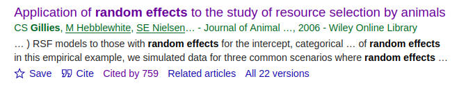
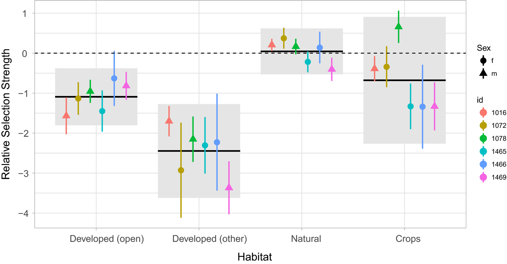
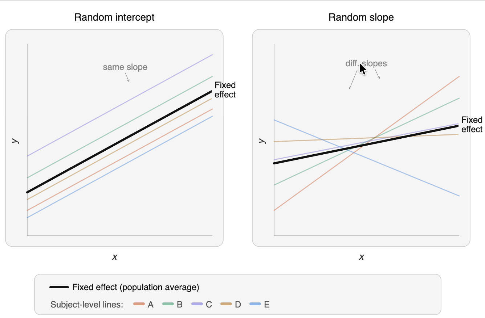
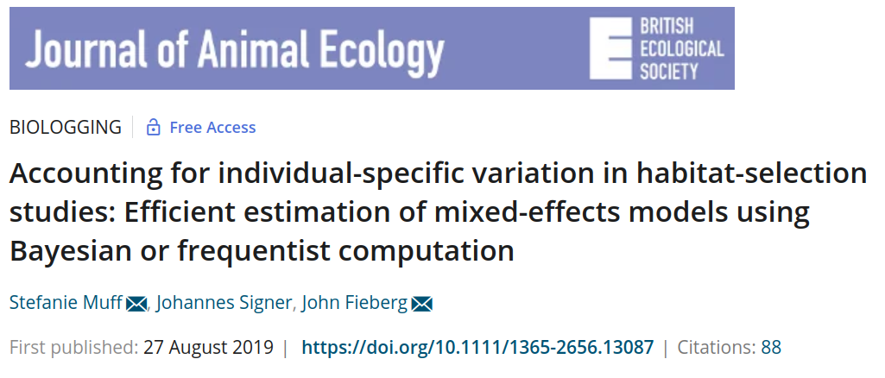
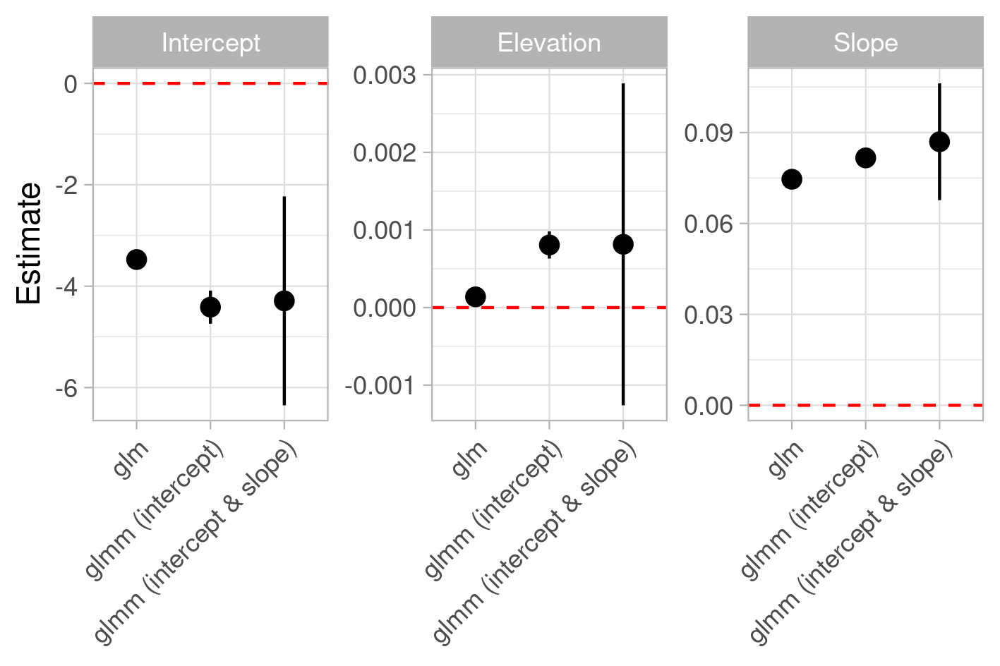
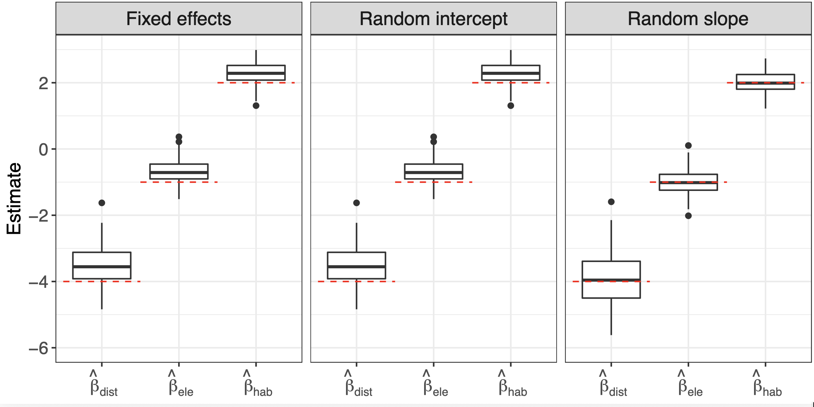
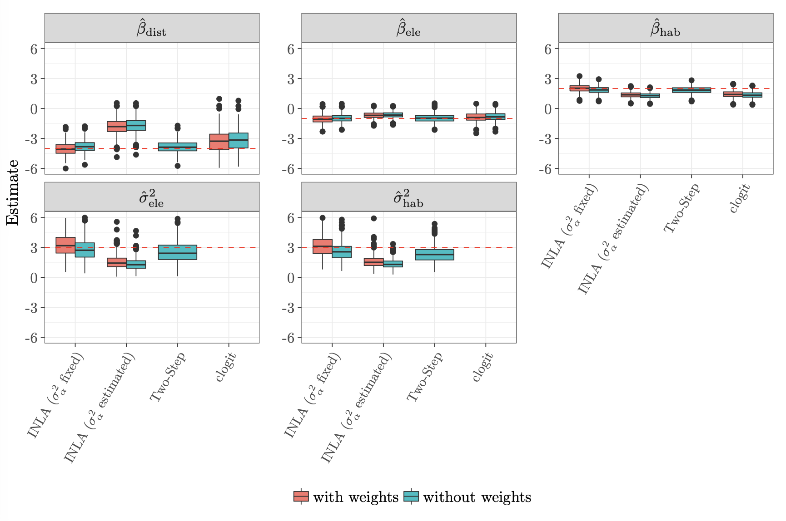
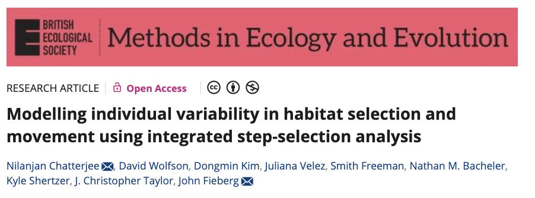
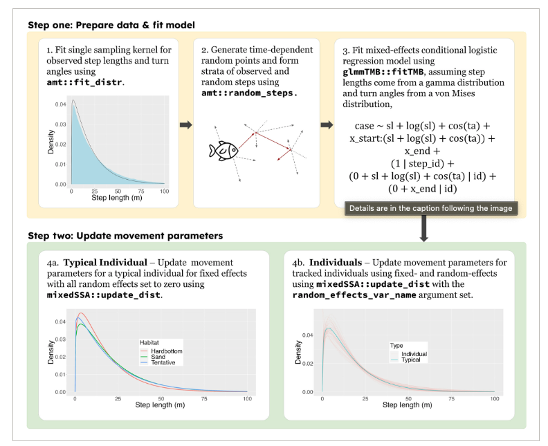
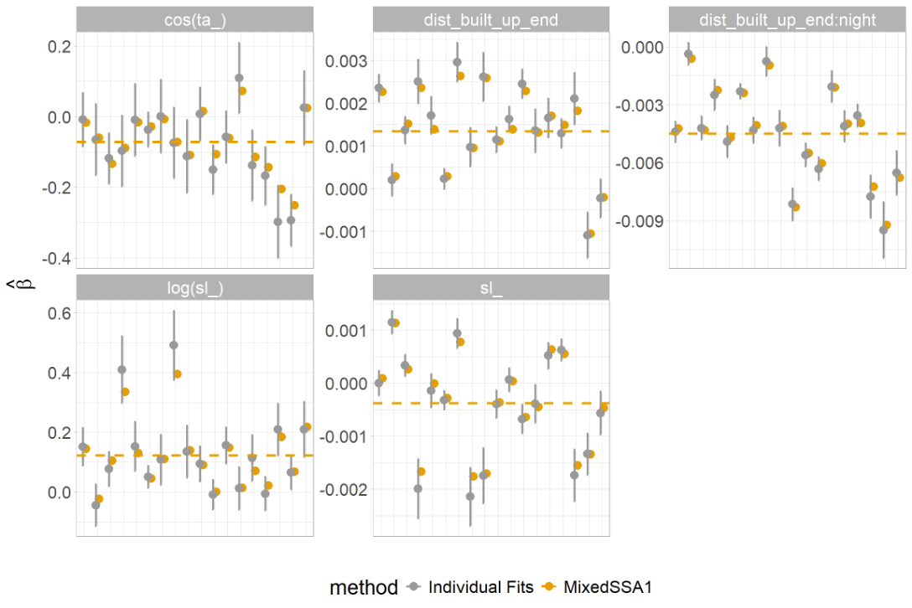

![]()

Mixed Models
Analysis of Animal Movement Data with R 2 (together with Brian Smith)
April 21, 2026
Why should we care?
- Most telemetry studies have data from many animals.
- Often individual behave very different (and we can fully account for these differences in a model).
- We are often interested in population-level effects (i.e., how would an average animal behave).
How-to account for individual differences
- Ignore individuals and fit data to all animals.
- Two-Step approach: Fit individual models to each individual (or instance) and summarize population-level characteristics during a second step (i.e., use individual-specific parameter estimates as data).
- Mixed/hierarchical/random-effect models: Obtain individual-specific parameter estimates from one single model
Two-step approach
A somewhat naive approach could be, to fit to each individual animal the model of interests (e.g., a SSF or an iSSF).
In a next step we can then “do statistics” with the coefficients of the individual model. For example, we could
- calculate the mean and confidence intervals to obtain population level effects, or
- use a linear models to relate coefficient values to other explanatory covariates.
A difficulty is if we have extreme observations or some levels of a categorical covariate is not observed for all animals.
There are different programming strategies, how one could approach such a situation:
- Write customized code for each individual.
- Use some kind of looping structure (for example a
for-loop). - Use a nest-unnest approach, as we have seen previously (for example with the
purrrpackage; see module 7 of the first part of this course).
Example 1
An example of this approach was used in Signer et al. 2019

Source Signer et al. 2019
Example 2
3. Use a mixed-model strategy.
For HSF this is relatively straight forward. We can make use of well established tools that were developed for GLMMs.
For iSSFs this is slightly more challenging. We have to use a likelihood equivalent reformulation of the iSSF as a poisson regression with random effects for each strata with a fixed large variance.
Random effects for HSFs
- Random effects were proposed for HSFs over 15 years ago1.
- Majority of studies between 2016 and 2020 (80 %) only include random intercept and no random slope(s).
Reminder: random intercept vs random slope

Figure generated with Claude (Anthropic)
Muff et al. 2020 had another look at model specifications for RSFs/HSFs and extended this also to iSSFs.

A case study for HSF/RSF
- Data on habitat selection of Mountain Goats
- Generalized linear model with binomial response (GLM), random intercept (GLMM 1), and random intercept and slopes (GLMM 2).
Let us fit three models to tracking data from wild goats:
# This is a naive approach (ignoring different animals)
m1 <- glmmTMB(STATUS ~ ELEVATION + SLOPE,
data = goats, family = binomial())
# This is the random intercept model
m2 <- glmmTMB(STATUS ~ ELEVATION + SLOPE + (1 | ID),
data = goats, family = binomial())
# This is a random slope and intercept model
m3 <- glmmTMB(STATUS ~ ELEVATION + SLOPE +
(ELEVATION + SLOPE | ID),
data = goats, family = binomial())Comparing the model coefficients:

For RSF use random intercept and random slope(s).
A random intercept only model, is problematic because:
- the intercept in RSFs is not of interest (module 2) and depends on the sampling ratio of used versus available points.
- SEs will typically be too small without random coefficients (e.g., Schielzeth and Forstmeier 2009).
- it does not account for within-individual statistical dependence (i.e., autocorrelation in locations).
Accounting for animal-specific variation (SSF)
- Conditional logistic regression with random effects is more difficult.
- The conditional logistic regression is a special case of the multinomial model.
- The multinomial model is likelihood-equivalent to the Poisson model.
- Thus we can rewrite the conditional logistic regression as a Poisson regression.
SSF as poisson model
Reformulation as Poisson model
\[ \text{E}(y_{nti}) = \mu_{nti} = \exp(\alpha_{nt} + \pmb\beta^\top \pmb{x}_{nti} + \pmb{u}^\top \pmb{z}_{nti}) \ ,\quad y_{nti} \sim \text{Po}(\mu_{nti}) \]
- \(\alpha_{nt} \sim N(0, \sigma_\alpha^2)\) are the stratum specific intercepts with \(\sigma_{\alpha}^2\) being fixed at a very large value.
- \(\pmb\beta^\top \pmb{x}_{nti}\) are the selection coefficients and the design matrix, respectively.
- \(\pmb{u}^\top \pmb{z}_{nti}\) specify the random effect structure.
Simulation study from Muff et al. 2020
- Simulation of movement for 20 animals with animal-specific selection coefficients.
- For RSFs sample random points within the availability domain
- For SSFs sample random steps from each location
Results HSF

Results SSF

Software to fit these models
- HSF/RSF:
- Any standard software package that can fit GLMMs is suitable.
- iSSF:
- Frequentist: In R the package
glmmTMBcan be use, because it allows to fix the variance of random effects. - Muff et al. 2020 primarily used a Bayesian approach (INLA), as it straightforward to fix the variance.
- Frequentist: In R the package
How-to model movement in a mixed-effect context:

From Chatterjee et al. 2024:

Comparing mixed vs individual model approach for SSFs

Figure created by John Fieberg